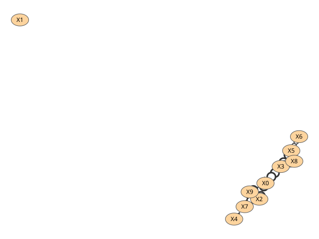

ETIA's CRV in ETIA-JAX: the path queries, a port of dagitty's adjustment sets, the bootstrap confidence of edges and paths, and SVG drawings. The agreement with ETIA, the oracle checks, and the run times.

| Part | What happens | ETIA-JAX |
|---|---|---|
| R call | subprocess.call([...], shell=True) on Linux and macOS starts only "R", without the script, so find_adjset cannot run. The R script also changes its folder from a guess about the current folder, and it loads pcalg. | No R: a port of dagitty 0.3.4 and of pcalg2dagitty. |
| CPDAG conversion | For a DAG or CPDAG, ETIA keeps only the marks 1 and 2, so the undirected edges of a CPDAG are lost. On 60 random CPDAGs, 19 of ETIA's 104 sets give a wrong effect. | etia_compat: the same. Default: all edges. |
--o edges | pcalg2dagitty has no case for a tail and a circle, so it drops these edges. | Default: dagitty's @-- edge. |
| Potentially directed path | The query follows o->, --> and o-o, not --o or ---. The depth-first search keeps only the current path, so it can visit a node many times. | Default: all these edges, breadth first (shortest path). |
calculate_confidence | It resamples the rows but runs the search on the original data; it gives a DataFrame where model.run needs a Dataset; it reads attributes that a dict does not have. It cannot run. | Real bootstrap samples in the two modes. |
| Edge consistency | ETIA's table is stricter than the end marks in 29 of 100 mark pairs: a tail against a circle, the undirected CPDAG edge, and o-> against <-o. | Default: each end mark agrees or one of them is a circle. |
| Path consistency | The loop stops at the first edge that is not the same. When this edge is consistent, the path counts as consistent and the later edges are not checked. | Default: all the edges. |
| Drawing | plot_edge_confidence and hide_edges read the columns edge_confidence and confidence, which the Cytoscape network does not have. | SVG drawing; the two methods take the weight table. |